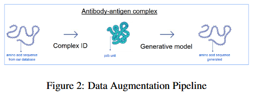
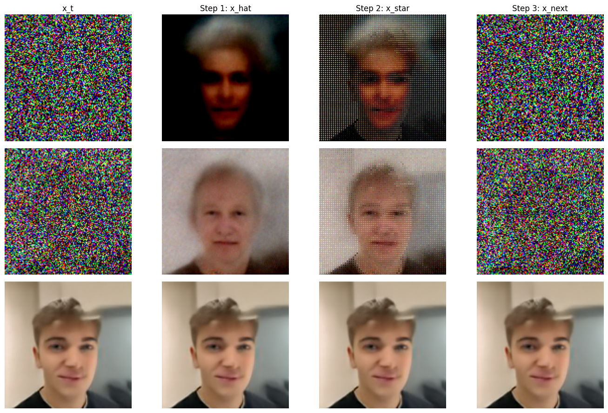
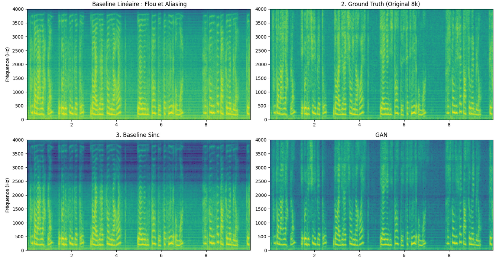
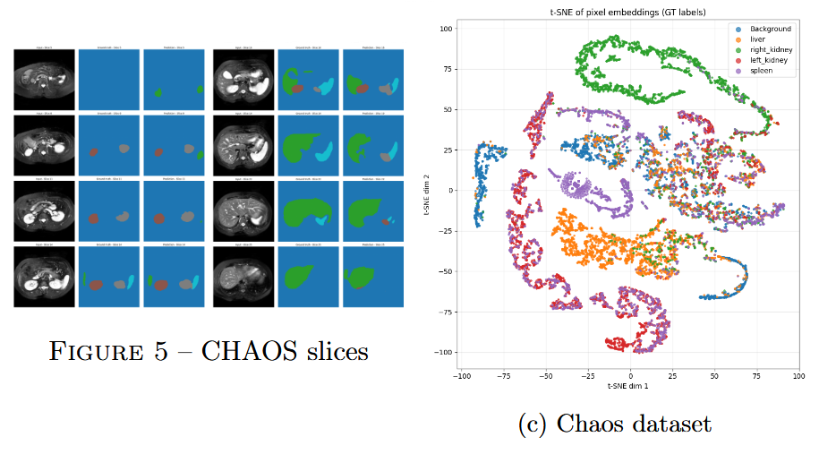
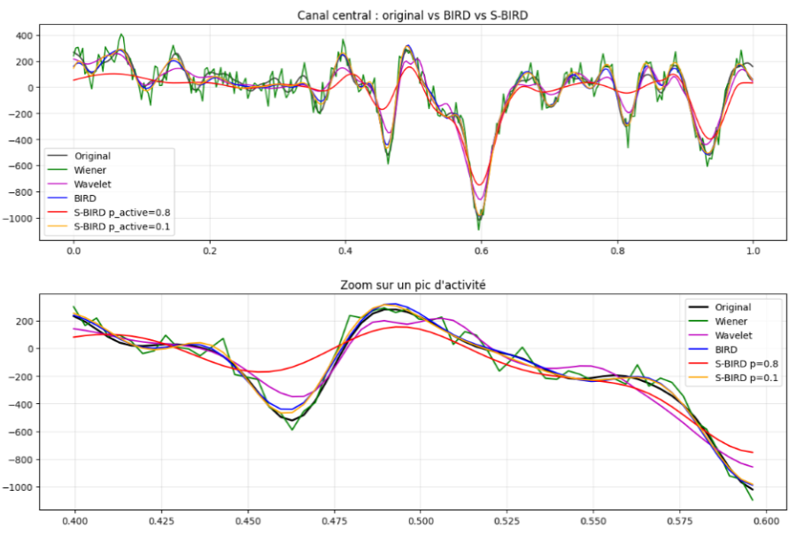

Projects
Research Internship Project

MVA Projects

Flower : Flow-Matching Solver for Inverse Problems
Course:
Generative Models for images
| Collaborator: Clément Dureuil
Superresolution of images using flow-matching solvers
Comparison with Diffusion Probabilistic Models methods
PyTorch implementation of the Flower pipeline
RISE : Randomized Input Sampling for Explanation of Black-box Models
Course:
Multimodal Explainable AI (XAI)
| Collaborator: Maxime Muhlethaler
Reproduction and Analysis of RISE
Application to Image Classification
Application to biological data: Pfam and amino acid sequences

Audio Super-Resolution
Course:
Deep Learning and Signal Processing
| Collaborator: Maxime Muhlethaler
Upsampling low-resolution audio (4 kHz → 8 kHz).
Implemented with deep neural networks in PyTorch.

Semi-Supervised Medical Image Segmentation
Course:
Medical Image Analysis
| Collaborators: Nicolas Beaujoin, Maxime Muhlethaler
Local contrastive loss + pseudo-labeling.
PyTorch reimplementation of semi-supervised segmentation pipelines.

Multi-scale Time–Frequency Denoising
Course:
Machine Learning for Time Series
| Collaborator: Maxime Muhlethaler
Denoising neurophysiological signals (MEG).
Multi-scale MDCT-based greedy reconstruction.